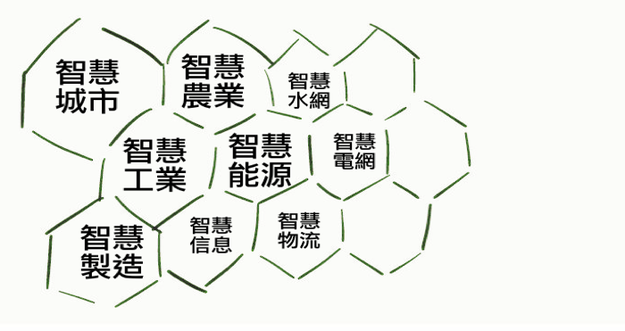

| 公司介紹 | 最新消息 | 產品介紹 | 檔案下載 | 實際案例 | 聯絡我們 | |
|  | ||||||
|
亞鈺創新有限公司設立於2017年，主要以提供智慧電力控制的解決方案
及代理農業設施智能環控品牌 GREENBELT。依作物生理訊號， 形成高產能作物生長微氣候，達到農作高收益。本司聘請多位電子電力 及生物機電工程博碩士，建立計算流體力學（CFD）評估溫室設施各項 控制設備對溫室內微氣象的新技術，降低栽培風險。 服務項目：無線控制電力系統、廠辦燈控系統、路燈智能電控系統、 農業設施節能降溫、灌溉系統。 微型氣象站，溫室工程規劃設計、維護保養。 |
||||||